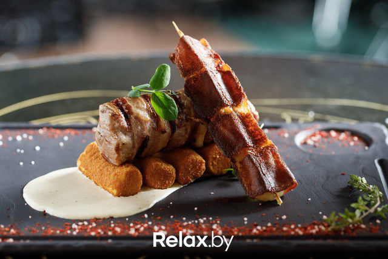
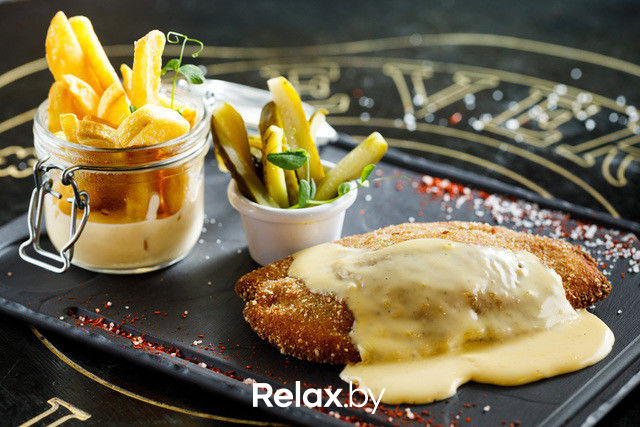
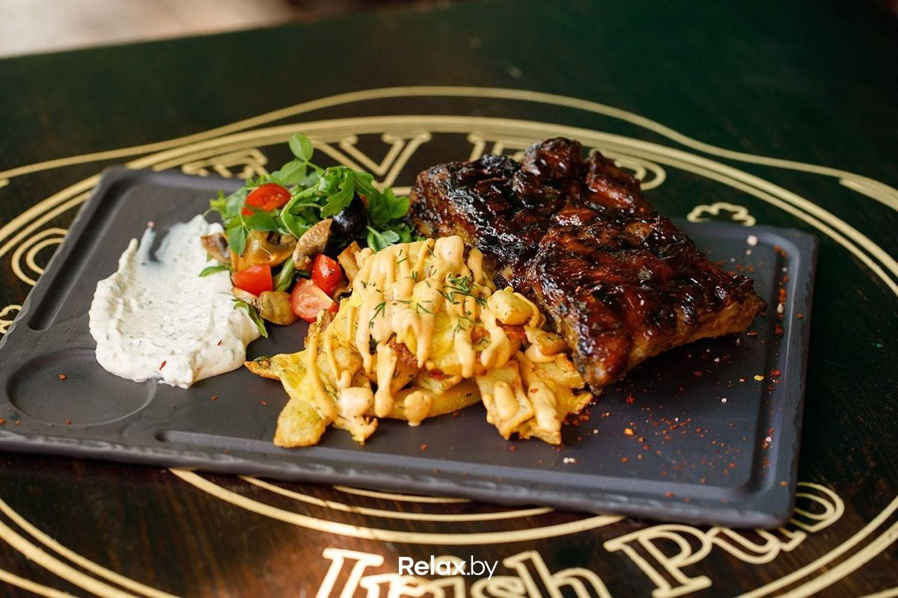

Закуски
-
Тигровые креветки в пряном соусе (190 г) 20,00 руб.
Креветки с сельдереем, приготовленные в воке с лаймом, вином, имбирем и перцем чили
-
Сыр фри (240 г) 11,00 руб.
Обжаренные в кляре кусочки сыра с грудинкой. Подаются с медовым соусом и глазурью «Бальзамик»
-
Куриные наггетсы с фри и соусом (180/100/45 г) 14,00 руб.
Маринованные кусочки куриного филе в тэмпуре с сырным соусом и картофелем фри
Основные блюда
-
Свинина в беконе (395 г) 16,00 руб.
Нежная свиная вырезка в беконе. Подается в соусе из белых грибов с шашлычком из сулугуни и крокетами
 -
Куриный шницель с сыром (420 г) 17,00 руб.
Куриное филе с сыром в панировке. Подается с картофелем фри, корнишонами и сливочно-сырным соусом
 -
Ребра с легким салатом и картофелем 16,00 руб.
Маринованные ребра, приготовленные на гриле с травами. Картофель фри с сыром чеддер и беконом.

Напитки
-
Флет-уайт 3 руб.
180 мл.
-
Капуччино 3 руб.
200 мл.
-
Фанта / Спрайт / Кола Зеро 3 руб.
500 мл.